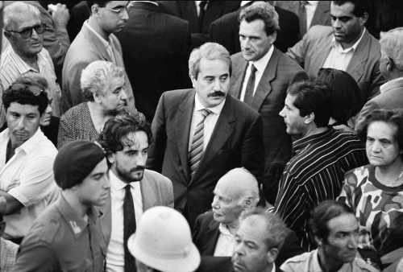

Giovanni Falcone | Un eroe solo
Chi era Giovanni Falcone
Giovanni Falcone, all'anagrafe Giovanni Salvatore Augusto Falcone (Palermo, 18 maggio 1939 – Palermo, 23 maggio 1992), è stato un magistrato italiano, vittima di Cosa nostra in Italia insieme alla moglie Francesca Morvillo e ai tre uomini della scorta: Antonio Montinaro, Rocco Dicillo e Vito Schifani. Assieme a Paolo Borsellino, collega e amico d'infanzia fino alla morte, Giovanni Falcone è una delle personalità più importanti e prestigiose nella lotta alla mafia in Italia e a livello internazionale. La salma del magistrato italiano venne tumulata in una tomba monumentale nel cimitero di Sant'Orsola a Palermo, ma nel giugno del 2015 venne poi traslata nella Chiesa di San Domenico, situata nel capoluogo siciliano.
Giovanni Falcone nasce a Palermo il 18 maggio 1939 da Arturo, direttore del Laboratorio chimico provinciale, e da Luisa Bentivegna. È il terzo figlio dopo due sorelle: gli piace stare in giro e giocare a pallone, una passione che condividerà con gli altri bambini del quartiere in cui è cresciuto, piazza Magione, nel cuore della città. Fra i compagni di giochi c’è anche il futuro collega e amico Paolo Borsellino. Nell’ambiente familiare il piccolo Giovanni assorbe quei valori che ne avrebbero contraddistinto il comportamento morale per tutta la vita. Si imprimono presto in lui il senso del sacrificio e un forte attaccamento al dovere. Dirà più tardi: “Occorre compiere fino in fondo il proprio dovere, qualunque sia il sacrificio da sopportare, costi quel che costi, perché è in ciò che sta l’essenza della dignità umana”.
Formazione
Frequenta il liceo classico a Palermo, dove si appassiona alla storia e ai movimenti sociali che ne fanno parte. Dopo il diploma, consegue una breve esperienza all’Accademia Navale di Livorno. Tuttavia, presto torna alla città natale per iniziare gli studi in giurisprudenza ed è proprio in questo campo che emerge la sua vera vocazione. Difatti, prosegue la carriera universitaria, laureandosi con il massimo dei voti nel 1961.

L’esordio in magistratura : Trapani
In seguito alla laurea, nel 1965 ottiene il primo incarico come pretore a Lentini, dove si ferma due anni. Nel 1967 viene trasferito a Trapani, città in cui inizia la sua vera storia professionale e matura la sua cultura giuridica e politica. È lì, durante il processo contro le cosche del trapanese, che avviene il suo primo incontro con i clan e con un capomafia: Mariano Licari. Dirà di lui Falcone nel 1985: “Mi imbattei in un boss di rango. Era Mariano Licari, un patriarca trapanese. Lo vidi in dibattimento, in Corte d’Assise. Era sufficiente osservare come si muoveva per intravedere subito il suo spessore di patriarca”. Alla fine il processo contro Licari viene trasferito in una sede diversa e naufraga: ancora una volta vince il cavillo della legittima suspicione la ricusazione di una Corte ritenuta dagli imputati “prevenuta”). Trapani non potè giudicare la sua mafia. “La giustizia subì una sconfitta”, dirà Falcone, ma quella battaglia gli fece intravedere una nuova strada da percorrere per potenziare le indagini e trovare altre prove: gli accertamenti patrimoniali sulla consistenza economica dei boss. È ancora a Trapani che il giovane magistrato si trova a rischiare per la prima volta la vita: mentre è in carcere come giudice di sorveglianza, a Favignana, un terrorista appartenente ai nuclei armati proletari lo prende in ostaggio puntandogli un coltello alla gola. In cambio del rilascio chiede e ottiene di poter fare delle dichiarazioni alla radio. Nel 1978 Giovanni Falcone chiede il trasferimento a Palermo e viene assegnato alla sezione fallimentare. Nel 1979 si separa dalla moglie e approda alla giustizia penale.